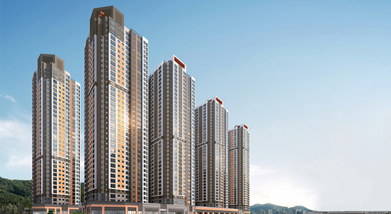
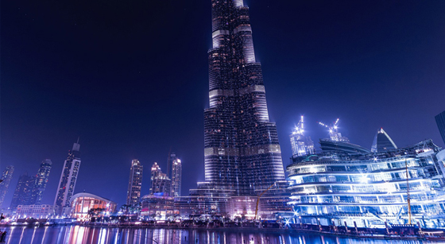

BUILD

- 주택
- Welcome smart home SK VIEW
- SK VIEW는 눈에 보이는 화려함, 어려운 기술이 아니라 주거의 본질적인 가치인 ‘편안함’과 ‘편리함’을 전달하는 것 초점을 맞추어 고객의 행복 가치를 실현합니다. SK건설은 1977년, 당시 고급 아파트의 대명사였던 워커힐 아파트를 시작으로 전국 각 지역에 아파트, 주상복합, 빌라 등의 주거공간을 건설해 왔습니다. 앞으로도 SK건설은 삶의 질을 업그레이드하는 한편, 남보다 한 발 앞선 주택시장을 주도해 나가겠습니다.

포트폴리오 보러가기
- 건축
- 최첨단 인텔리전트 빌딩 건설의 리더
- SK건설은 최신 건축 공법, 첨단 시스템을 바탕으로 인텔리전트 빌딩 건설의 리더로 주목받고 있으며, 쾌적하고 유연성 있는 공간 제공을 위한 지속적인 연구 개발에 노력을 기울이고 있습니다. SK건설은 쾌적하고 창조적인 사무공간을 갖춘 오피스빌딩, 최적의 교육 환경을 제공하는 교육 시설, 고품격 문화· 상업 시설, 고급호텔, 자연· 인간· 기술이 조화를 이룬 스포츠 콤플렉스, 리모델링 등 기능과 미학이 조화된 독창적인 건축을 선보이고 있습니다. 앞으로도 SK건설은 첨단 기술 축적과 고객 지향의 상품 개발을 통해 건축 전 분야를 선도하는 ‘Leading Company’가 되도록 노력하겠습니다.